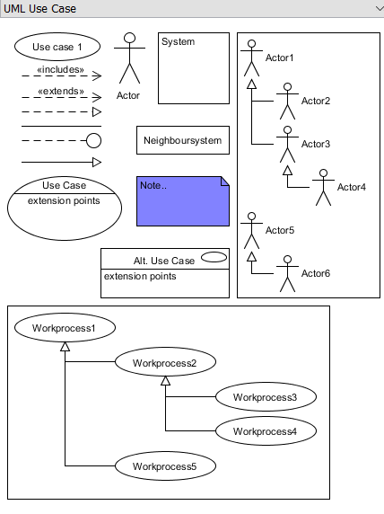
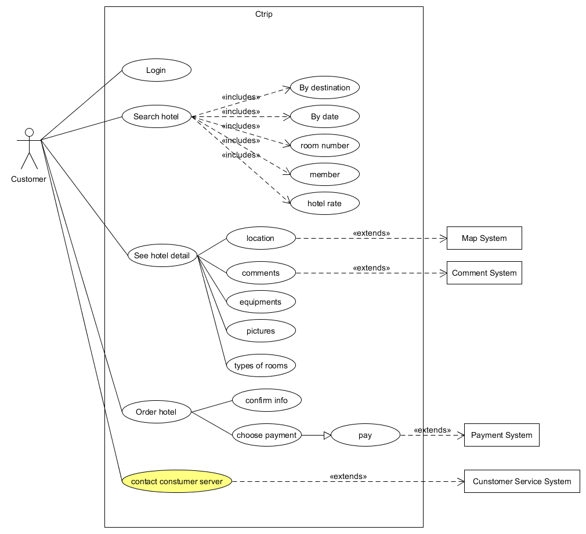
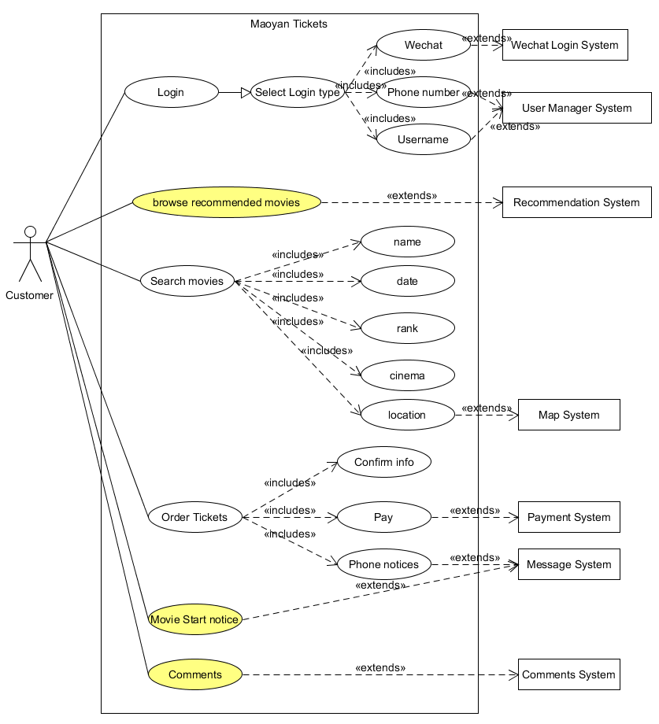

简答题
用例的概念
用例是一个和项目是否成功有关的场景的集合，这些场景描述了使用者来使用系统来达到目的的过程。用例是文档，而不是图表，所以，用例建模住主要是书写文档，而不是画图。用例和场景的关系？什么是主场景或 happy path？
用例是一系列场景的集合。主场景对应着系统最主要的对话，通常都是这个系统的成功的场景，它是最常用的，能够直接实现用户目标的场景。用例有哪些形式？
1. 简短格式
通常只包含主场景，在最开始的需求分析时候创建
2. 简便格式
一种不正式的格式，许多的图表涵盖了许多种场景
3. 完全格式
详细描述了所有的步骤和变量以及先决条件，成功保证等，在编写了简短格式的用例之后，经过迭代得到完全格式的用例对于复杂业务，为什么编制完整用例非常难？
用例结构化地，深入地展示了业务的许多细节，复杂业务的很多场景很复杂，甚至不明确，这对于编写完整的用例来说存在困难。什么是用例图？
用例图是对系统上下文的描述，可以展示系统的边界，系统的使用方法，可以作为一个交流工具概况系统及其参与者的行为等。用例图的基本符号与元素？
用例图的画法与步骤
1. 确定系统的边界，然后画出系统框架并写上系统名字
2. 确定参与者，主要参与者在左边，支持性参与者在右边
3. 确定参与者之间的关系
4. 根据需求识别和创作用例
5. 确认用例与参与者之间的关系
6. 将用例画在系统中，ruo涉及其他子系统，则将子系统放在右边
- 用例图给利益相关人与开发者的价值有哪些？
1. 相关人员可以直观看到系统的基本框架
2. 有利于开发最后的整合
3. 方便设计人员和开发人员之间的交流
建模练习题（用例模型）
选择2-3个你熟悉的类似业务的在线服务系统（或移动 APP），如定旅馆（携程、去哪儿等）、定电影票、背单词APP等，分别绘制它们用例图。并满足以下要求：
1. 请使用用户的视角，描述用户目标或系统提供的服务
2. 粒度达到子用例级别，并用 include 和 exclude 关联它们
3. 请用色彩标注出你认为创新（区别于竞争对手的）用例或子用例
4. 尽可能识别外部系统和服务

然后，回答下列问题：
1. 为什么相似系统的用例图是相似的？
因为相似系统的业务是相似的，所以用例图也是相似的。
2. 如果是定旅馆业务，请对比 Asg_RH 用例图，简述如何利用不同时代、不同地区产品的用例图，展现、突出创新业务和技术
可以参考早期的产品，发掘它的优点加以借鉴，同时找到用户使用该早期产品时体验不好的地方以及它的用例图不合理的地方，然后结合市场调研的结果，在我们的产品上进行改进创新，同时通过一次次迭代，完善我们的产品的创新点。
3. 如何利用用例图定位创新思路（业务创新、或技术创新、或商业模式创新）在系统中的作用
用不同颜色的图例来突出创新点
4. 请使用 SCRUM 方法，选择一个用例图，编制某定旅馆开发的需求（backlog）开发计划表
| ID | Title | Imp | Est | How to Demo |
|---|---|---|---|---|
| 1 | 查找酒店 | 10 | 30 | 根据位置查找酒店 |
| 2 | 预订酒店 | 30 | 20 | 预定需要的酒店 |
| 3 | 查询 | 10 | 20 | 根据名字，位置等信息查找酒店 |
| 4 | 支付 | 20 | 10 | 支付订单 |
| 5 | 管理账单 | 15 | 15 | 管理已支付订单 |
| 6 | 管理账户 | 20 | 10 | 管理自己的账户信息 |
5. 根据任务4，参考 使用用例点估算软件成本，给出项目用例点的估算
| 用例 | 事务 | 计算 | 权重 |
|---|---|---|---|
| 查找酒店 | 1 | 2 | 平均 |
| 预订酒店 | 4 | 5 | 重要 |
| 查询 | 5 | 10 | 重要 |
| 支付 | 2 | 5 | 简单 |
| 管理账单 | 3 | 5 | 重要 |
| 管理账户 | 2 | 5 | 简单 |